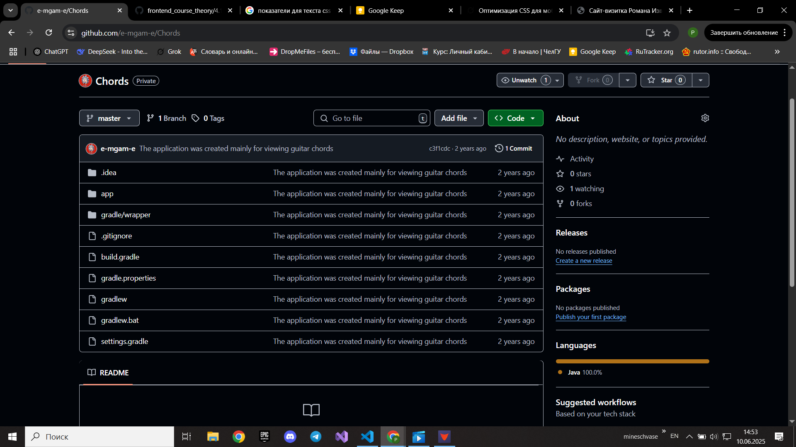

Снежное регби 2025
Ехали обновлённым, самым боевым составом.
Была мощная заруба, уступили только команде военных.
Самое главное, все остались довольными, а я только вырос в опыте.
Студенческое первенство 2025
Это был мой первый опыт в регби-7 и сразу на новой позиции.
К слову эта позиция самая сложная, но именно благодаря ней и доверию команды,
я сделал больше всего попыток и привнёс наибольший вклад к завоеванию почётного третьего места.
Первое приложение
Это моё первое приложние, которое я делал на курсах в школе.
Это был для меня новый язык Java, который я изучал с нуля.
Я строил слишком большие планы и не доделал его,
потому что реализовать их у меня не хватало знаний.
P.S. В будущем, я планирую занво изучить Java и закончить его. На GitHub он запривачен))
